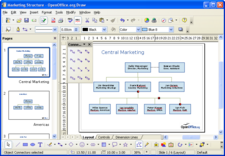

Draw
Mogočen grafični paket
 Naj si bo hitra skica ali zapleten načrt, DRAW ponuja orodja za komunikacijo z grafiko in diagrami.
{kind=link}
'Parkirajte' svoje najpogosteje uporabljena orodja za risanje okrog svoje delovne površine, v pripravljenosti za dostop z enim samim klikom.
Uporabite Sloge in oblikovanje za postavitev vseh uporabljenih grafičnih slogov na doseg svojih prstov.
Upravljajte s predmeti, sukajte jih v dveh ali treh dimenzijah; s kontrolnikom 3D so na voljo krogle, kolobarji, kocke ipd.
Razporedite predmete: združite, razdružite, prerazporedite in urejajte predmete, medtem ko so v skupini. Z visoko razvitim upodabljanjem lahko ustvarite foto-realistične slike z lastno teksturo, učinki osvetlitve, prosojnostjo, perspektivo in tako naprej.
Pametni konektorji mpoenostavijo delo z grafikoni poteka, organizacijskimi grafikonov, mrežnimi diagrami ipd. Določite lastne 'točke lepljenja', na katere se 'lepijo' konektorji.
Dimenzijske črte samodejno izračunajo in prikažejo linearne dimenzije, sproti ko rišete.
Uporabite Galerijo slik za izrezke; ustvarite lastne umetnine in jih dodajte v Galerijo.
Shranite svoje slike v zapisu OpenDocument, novem mednarodnem standardu za pisarniške dokumente. Ta na XML zasnovan zapis pomeni, da niste omejeni zgolj na DRAW. Svoje slike lahko uporabljate s katero koli programsko opremo, ki podpira standard OpenDocument.
Uvažajte slike iz vseh pogostih zapisov (vključno z BMP, GIF, JPEG, PNG, TIFF in WMF).
Uporabite brezplačno sposobnost ustvarjanja različic svojega dela v zapisu Flash (.swf).